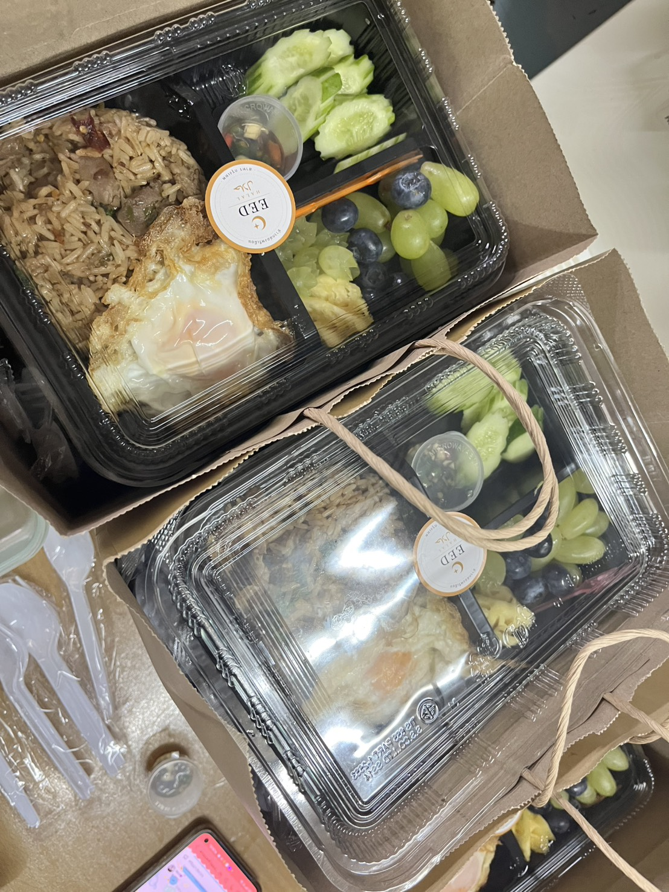
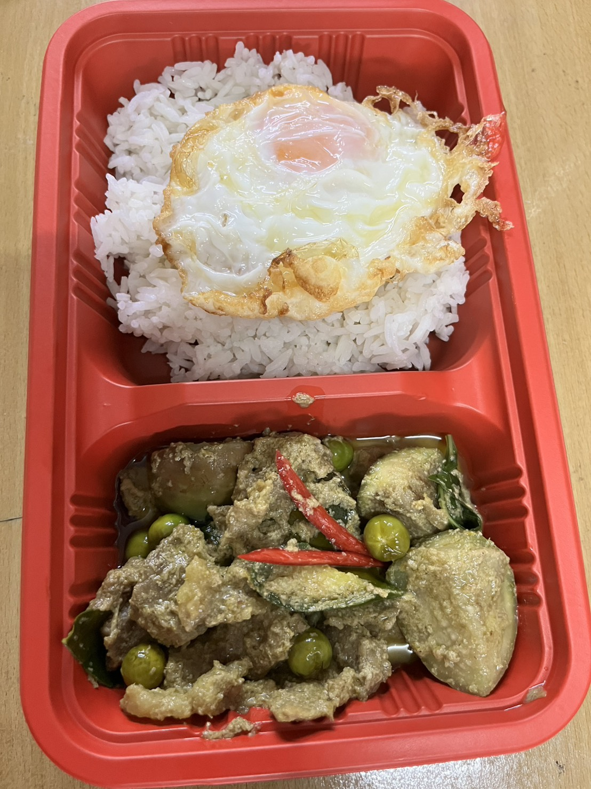

Package A
งานเลี้ยงทั่วไป
งานเลี้ยง ทำบุญ งานกลุ่ม — เสิร์ฟเป็นหม้อพร้อมทีมช่วยตัก
- ยกหม้อ (1 หม้อ รองรับ 30–40 คน)
- ทีมช่วยตักเสิร์ฟหน้างาน
- ควบคุมรายการอาหารเป็นชุดได้ง่าย
- ใบเสนอราคาและใบเสร็จครบ
บริการจัดเลี้ยงฮาลาลองค์กรและ catering ฮาลาลงานเลี้ยงในกรุงเทพฯ เหมาะกับงานเลี้ยง งานองค์กร และอีเวนต์ที่ต้องมีทีมช่วยจัดหน้างาน ตั้งแต่บูธและไลน์อาหารจนถึงธีมงาน เลือกได้ทั้งยกหม้อและ Live Cooking Station ฮาลาล ทุกเมนูฮาลาล 100%
และมีทีมช่วยตักให้แขกที่โต๊ะหรือจุดเสิร์ฟ เลือกบริการยกหม้อ
บริการอาหารที่มีเชฟมาปรุงอาหารให้ชมกันแบบสดๆ เลือก Live Cooking Station (ซุ้มอาหารปรุงสด)
หน้านี้ช่วยแยกให้ชัดว่าควรใช้ยกหม้อหรือ Live Cooking Station ฮาลาล ถ้างานมีทีมหน้างาน มีธีม หรือมีแขกจำนวนมาก เราจะช่วยคุม presentation และการเสิร์ฟให้ลื่นกว่าเดิม

บริการอาหารที่มีเชฟมาปรุงอาหารให้ชมกันแบบสดๆ จานต่อจาน เหมาะกับงานที่ต้องการความตื่นตาและประสบการณ์ที่น่าจดจำ
3 แพ็กเกจตัวอย่างครอบคลุมงานทุกรูปแบบ — ปรับเมนู จำนวน และงบได้ตามงานจริง ทัก LINE เพื่อรับใบเสนอราคาภายใน 15 นาที (เวลาทำการ)
งานเลี้ยง ทำบุญ งานกลุ่ม — เสิร์ฟเป็นหม้อพร้อมทีมช่วยตัก
ประชุม อบรม สัมมนา — ข้าวกล่องพร้อมเอกสารองค์กรครบ
งานธีม อีเวนต์ VIP — เชฟปรุงสดหน้างาน จานต่อจาน
ทุกแพ็กเกจอยู่ภายใต้มาตรฐานฮาลาล CICOT — ราคาจริงขึ้นกับเมนู จำนวน และธีมงาน
ทีมงาน เชฟ โต๊ะอาหาร และบรรยากาศงานจริง — ไม่ใช่แค่รูปอาหาร ให้เห็นว่ามือใครทำ และหน้างานแบบไหนที่เราดูแล




เมื่อคุณอยากให้อาหารออกมาเป็นชุดใหญ่ เสิร์ฟง่าย เหมาะกับงานทำบุญ งานเลี้ยงกลุ่ม หรือพื้นที่ที่ไม่ต้องตั้งไลน์อาหารยาว
เมื่อคุณต้องการเชฟปรุงสดหน้างาน จานต่อจาน ให้แขกเห็นขั้นตอนการทำ
ตัวอย่างงบและวิธีสั่งให้พอดี สำหรับงานจัดเลี้ยงทุกรูปแบบ
แจ้งลักษณะงาน จำนวนแขก และช่วงเวลาที่ใช้งานมาได้เลย ทีมงานจะช่วยแนะนำว่าแบบยกหม้อหรือ Live Cooking Station เหมาะกับหน้างานของคุณมากกว่า